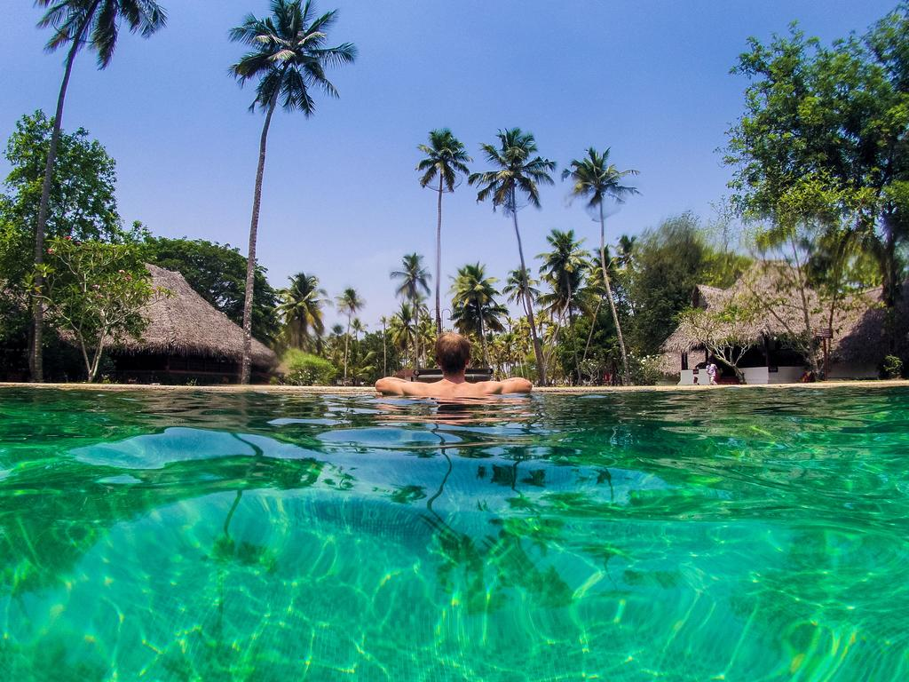
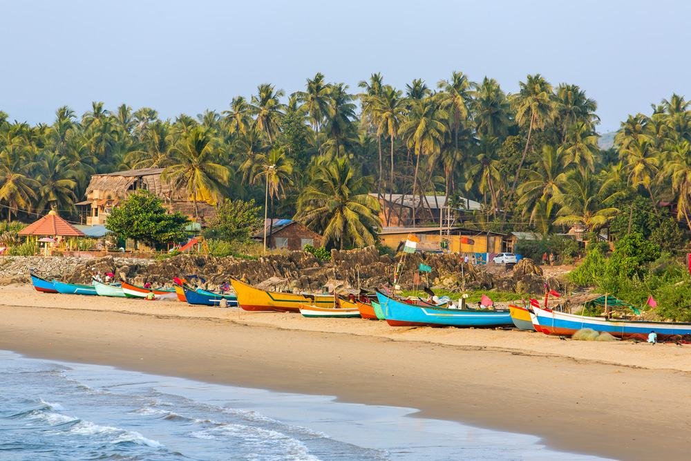

Mandrem is one of the most northernmost beaches in Goa.Mandrem is a small but beautiful beach. It is only 790 meters long.
This is a white sandy beach, which remains secluded even in the peak tourist season, as most people prefer to visit the other more popular beaches in north Goa.
Tall casurina and palm trees line its shore. There are a few sand dunes with shrubs on them. The Mandrem village is a fishing community, so you will see the occasional fishing boats, the fishermen counting their catch, or the locals drying their nets on the beach.
There are also a few shacks run by the locals with their sun beds where you can sit back, drink, have your food, relax, and enjoy the beauty of nature.

Marari Beach, Kerala
This beach in Kerala is eternal with coconut palm trees and golden sands. The beach is quite beautiful and the name 'Marari' arises from 'Mararikulum', which is a local village on the Arabian Sea Coast.Marari is a peaceful place to relax and chill out. If you wanna visit Marari, you must soak up and enjoy the serenity on the deserted sandy beaches.
To make your trip interesting, you may roam around the beach as there are plenty of sightseeing places where you can spend some quality time with your loved ones. If you are there in the month of August, you may also try and enjoy Snake Boat Races.
Adventure freaks can also choose for sea surfing, parasailing, water skiing, and deep sea fishing.

Gokarna Beach, Karnataka
Gokarna is a Hindu pilgrimage town in Karnataka and a newly found hub for beach lovers and hippies. Situated on the coast of Karwar, every year Gokarna welcomes hordes of tourists from around the world in search of sanctity and relaxation. The out-of-town beaches like Kudle beach and Om Beach are a different contrast to life inside the town.
Palm clad beaches are dotted with foreign tourists in a majority and very few Indians are seen across. Gokarna is not very conventionally touristy. The beaches are meant for a slow, relaxed holiday and everything on the beach goes at the same relaxed pace. Full of coconut and palm trees, the ocean and clean sands, Gokarna is a 'one of a kind' place in the country.